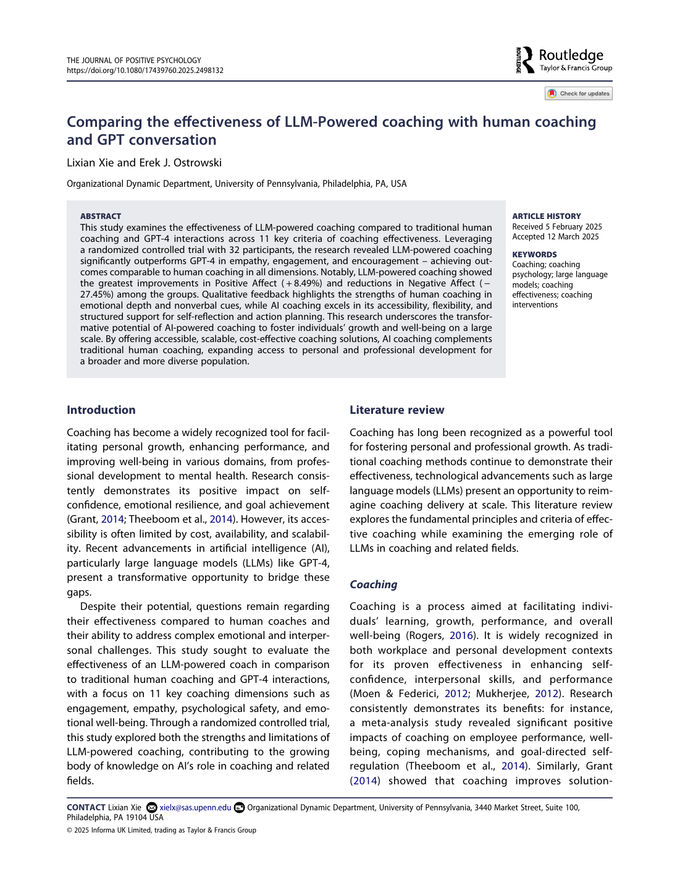

Comparing the Effectiveness of LLM-Powered Coaching with Human Coaching and GPT Conversation
The Journal of Positive Psychology · 2025
A randomized controlled study comparing a purpose-built LLM coach, human coaching, and GPT-4. The AI coach performed comparably to human coaching across measured dimensions and exceeded general GPT-4 conversation in empathy, engagement, and encouragement.